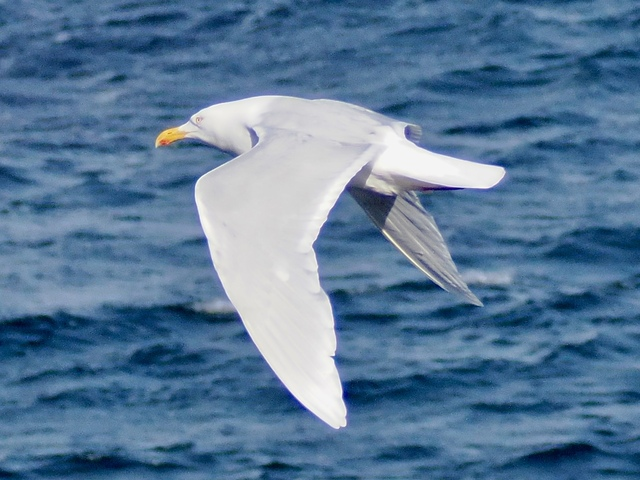
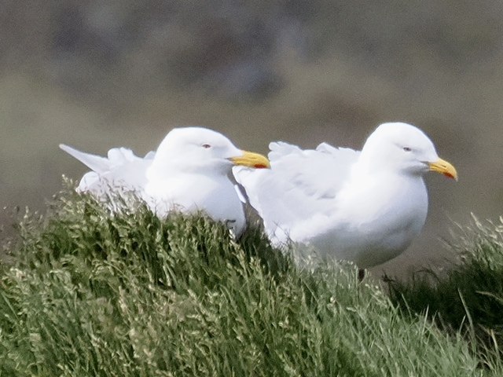

Glaucous Gull
Larus hyperboreus
Order: Charadriiformes
Family: Laridae

A large gull, around the size of Greater Black-backed. Has white wing tips. "Glaucous" describes a bluish grey colour, something like #BECCE1.

Somehow, these two have stupidly small eyes.